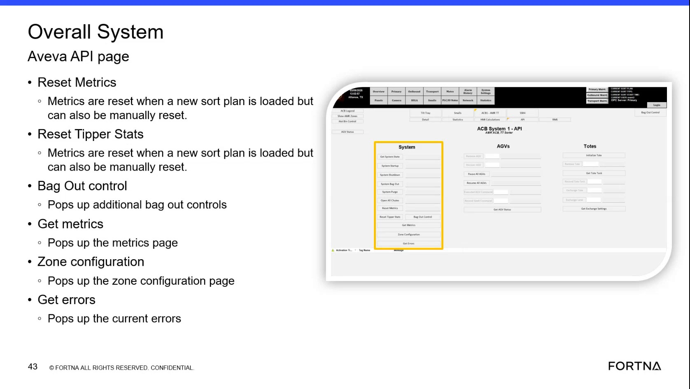

| Procedure ID | proc_open_the_zone_configuration_page_from_the_overall_system_aveva_api_page_v1 |
|---|---|
| Title | Open the Zone Configuration Page From the Overall System Aveva API Page |
| Procedure Type | operation |
| Primary Role | L2_support |
| Support Safe | Yes |
| Validation Status | needs_sme_review |
| Merge Status | source_finalized |
Access the Zone configuration page from the Overall System Aveva API page. The source confirms that the Overall System Aveva API page contains a Zone configuration option that pops up the zone configuration page, but also notes that nobody uses it. This runbook covers page access only and does not authorize configuration changes.
Use when support personnel need to access the Zone configuration page from the Overall System Aveva API page and only page access is required.
Responsible role: L2_support
Instruction:
Open the Overall System Aveva API page.
Expected result:
The Overall System Aveva API page is displayed.
Screens / Images:

Stop or Escalate If:
Responsible role: L2_support
Instruction:
Locate the Zone configuration control on the Overall System Aveva API page.
Expected result:
The Zone configuration control is identified on the page.
Screens / Images:
Stop or Escalate If:
Responsible role: L2_support
Instruction:
Select Zone configuration to open the zone configuration page.
Expected result:
The zone configuration page opens.
Screens / Images:
Stop or Escalate If: